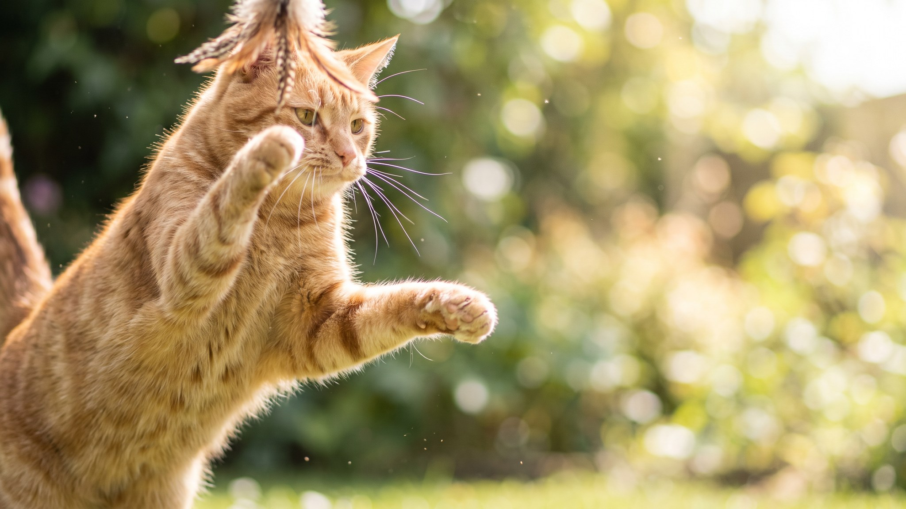

Нашли на полу длинный жёсткий волосок, и это явно кошачий ус. Большинство хозяев либо не замечают такие находки, либо сразу начинают беспокоиться. Правда посередине: кошка теряет усы периодически, и это нормально, но есть ситуации, на которые стоит обратить внимание. Ниже: как устроены вибриссы, почему они выпадают, что с ними категорически нельзя делать и когда показать кошку врачу.
🐾 Заведите дневник ухода за кошкой
Вес, шерсть, обработки, прививки — всё в одном месте. А если что-то смущает, AI-ветеринар ответит круглосуточно и бесплатно.
Завести дневник → Завести в MAX →
У вас iPhone? AnimaLife есть в App Store
Усы, или вибриссы, уходят глубоко в кожу и соединены с нервными окончаниями. Кошка считывает через них вибрации, потоки воздуха и форму пространства вокруг. По вибриссам на морде кошка оценивает, пролезет ли она в проём, ещё до того как туда сунется. Помимо морды, усы есть над глазами, на подбородке и на передних лапах.
Длина вибрисс у кошки, как правило, равна ширине её тела: встроенный в анатомию ориентир.
Вибриссы, как и обычная шерсть, проходят цикл роста. Старый ус выпадает, на его месте вырастает новый. Это занимает несколько недель. Несколько выпавших усов за месяц: нормальная картина. Оба левых уса не выпадают одновременно: природа «синхронизации» устроена так, чтобы кошка не теряла чувствительность с одной стороны сразу.
Если кошка теряет усы по одному-два время от времени, это никак не влияет на её самочувствие и ориентацию в пространстве.
Подстригать или выдёргивать вибриссы нельзя. Это не шерсть, которую можно укоротить. Кошка без усов хуже ориентируется в темноте, промахивается при прыжках, плохо оценивает расстояния. Животное становится тревожнее, отказывается от игр и меньше исследует пространство. Полное восстановление вибрисс занимает несколько месяцев. Ни один грумер не вправе это делать. Если предлагают, это повод сменить специалиста.
Единичные выпавшие усы без других изменений не требуют действий. Насторожить должно другое:
Любой из этих пунктов: повод описать ситуацию ветеринару. Не ждать, пока «само пройдёт».
Запись к врачу нужна, если выпадение усов сопровождается хотя бы одним из перечисленных выше признаков. Кожные изменения у кошек нередко связаны с питанием, аллергией, стрессом или паразитами. Всё это врач оценит при осмотре и при необходимости направит на анализы. Самостоятельно ставить причину и выбирать средства не стоит: одна и та же внешняя картина бывает следствием разных состояний.
Хорошее правило: если что-то изменилось во внешности или поведении кошки и изменение не прошло за 7-10 дней, осмотр врача уместен.
Материал носит информационный характер и не заменяет очную консультацию ветеринара.
🐾 Чтобы уход не держать в голове
AnimaLife напомнит, когда стричь когти, вычёсывать, купать и обрабатывать от паразитов, и заведёт дневник по вашему питомцу. Бесплатно.
Настроить напоминания → Настроить в MAX →
У вас iPhone? AnimaLife есть в App Store
🐾 Понравился разбор?
Подпишитесь на канал — каждый день разбираем по одному тревожному симптому у кошек и собак: что в пределах нормы, а когда пора к врачу. Подпишитесь, чтобы не пропустить разбор, который может спасти здоровье вашего питомца.